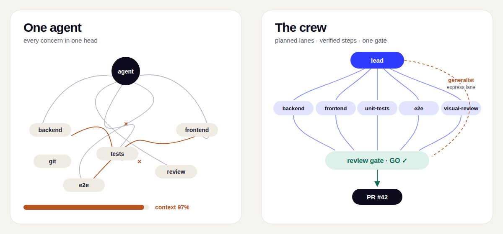

One agent holding a whole feature reviews its own work. crew splits the job the way your team does: a lead that plans and delegates, specialists that know the CMS they work in, and guardrails in code that keep every lane honest until one review gate says go.
$ claude plugin marketplace add johantor/plugins $ claude plugin install crew@johantor
One skill per product. The backend specialist reads your EPiServer.CMS version and
loads the matching skill: content model rules, rendering, jobs, caching, security and DXP deploys.
IContentLoader, rendering, jobs, DXP.[ScheduledJob].
Fourteen specialists, each in its own lane, and one lead that writes no production code.
It writes a plan with acceptance criteria, waits for your go-ahead, dispatches each step to a specialist, and commits the step once it passes. It is the only agent that touches git.
analystAcceptance criteria, content needs, a tracking plan.architectContent models, Graph schemas, catalogs, integrations.designerThe tokens and component specs the frontend builds to.backendServer code, with the Optimizely skill for your version.frontendViews and components, Razor included.copywriterUI and editor copy, resource and locale files.generalistSmall, low-risk changes across lanes.unit-testsBackend tests, plus component tests when configured.e2eBrowser tests with Playwright or Cypress.visual-reviewThe build against the design, by token.security-reviewThe security part of the review gate.web-reviewSEO, accessibility and performance.incident-triageA production signal to the code and the suspect commits.debt-scoutReady-to-paste debt pointers for a scope you name.Or open a claude --agent crew:lead session and just describe the work.
/crew:initOnce per project: record the stack, the build, test and lint commands, and the formatters./crew:featurePlan, delegate, build, and stop at the review gate./crew:reviewGO or NO-GO: code, security and design review, plus build, test and lint./crew:prPush the branch and open the pull request. The only way out of the machine./crew:addressRoute review comments and CI failures back to the crew, then run the gate again./crew:debtFix one debt pointer: a suppression, an analyzer rule, a package upgrade. Beta/crew:triageA bug report, trace or alert → the code and the suspect commits./crew:loopRun the lead again each tick until the plan's exit conditions are met.A prompt is a suggestion to a model. These run in the harness before each tool call, so a worker cannot talk its way past them.
.git/ are blocked./crew:pr.# backend tries to commit $ git commit -m wip Blocked: backend runs no git but a plain `git mv`. Return your result; lead commits verified steps. # frontend edits through the shell $ sed -i s/a/b/ src/app.ts Blocked: sed writes a file from Bash, which reaches no Edit|Write hook. Use Edit/Write. # a worker starts a dev server $ npm run dev Blocked: watch/dev/serve commands never terminate. Use the one-shot build/test command.
board, from the same marketplace, is a local kanban of every Claude Code session. A crew run shows its subagents on the session's card.